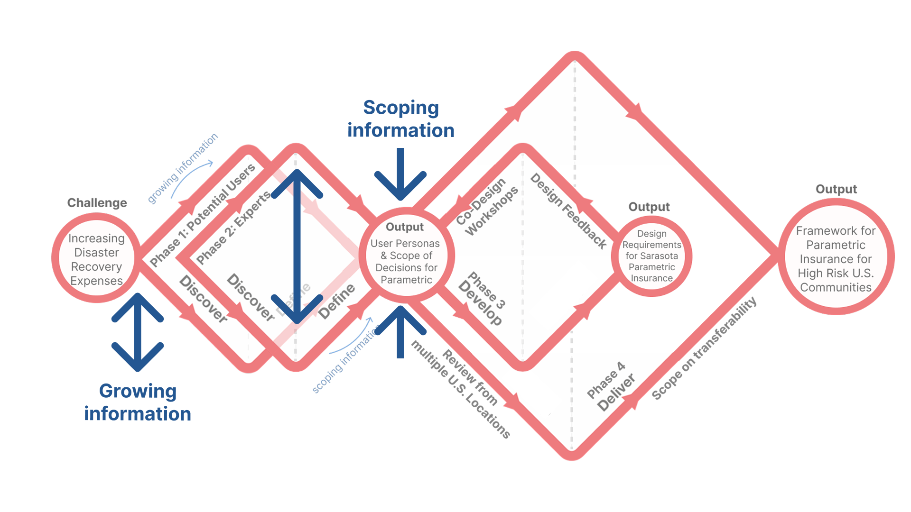
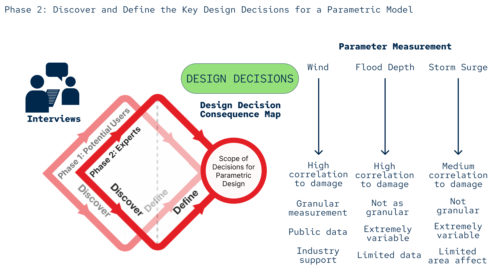
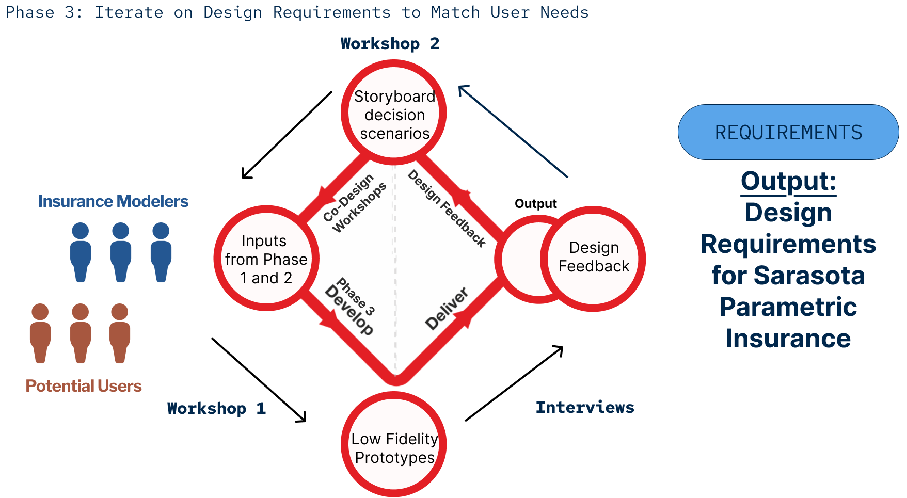
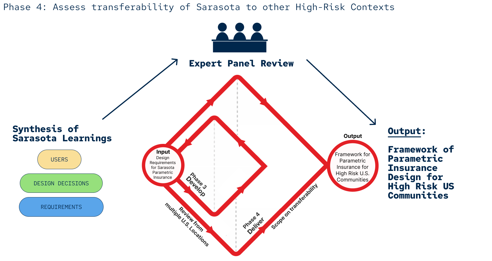
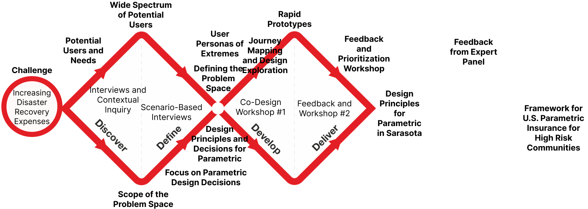
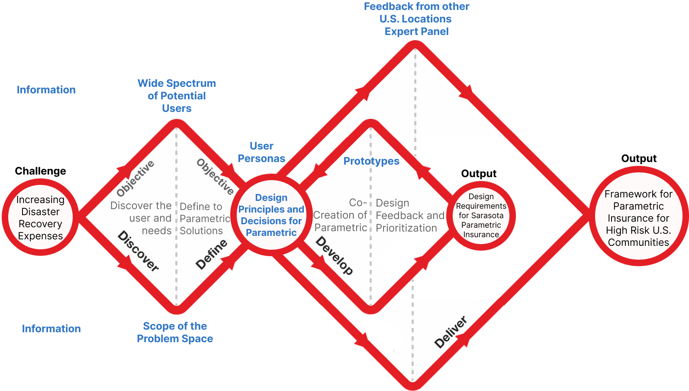
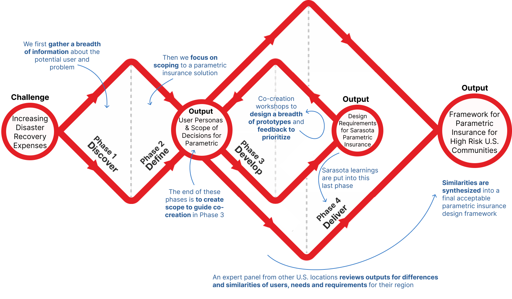

Double Diamond Methodology
A visual representation of the methodological approach to my project in Parametric Insurance in Sarasota.

Overview and Design Goal
This design work visualizes my approach to leveraging co-design for parametric insurance. This is adapted from the Design Council 2005 Double Diamond Approach with four phases for the project.
Why Diamonds?
The main reasons for diamonds is to explain the growing and scoping of information during the four phases. When the diamond diameter is expanding the breadth of information is growing, and when it comes to a point, we are scoping to a focus point of information.
Breakdown of Phases
For ease of understanding, I have included a break down of each of these four phases below with more specifics.
Phase 1 focuses on the engagement of potential users first to grow information over many people in interviews and then scope this qualitative information into extreme user personas.

Phase 2 repeats similar steps to Phase 1 but with experts and their understanding of how to design a parametric insurance model.
Phase 3 incorporates co-design through workshops, both with modelers and users separately and together. It iterates multiple times to come to an end concensus of design of insurance.
Phase 4 completes the process by sharing information from Sarasota to other locations then focusing on the similarities of needs, users, and design in other locations for a Framework design of Parametric Insurance.
Development of the Visual
One of the key components to any visual is the iteration it takes to get to the final result, below I have included other prior versions of the same graphic so you can better understand what the process looks like to getting to an end product.
  